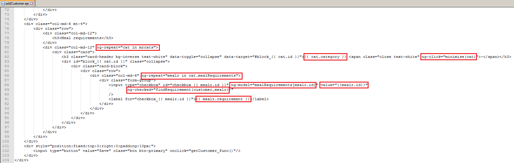
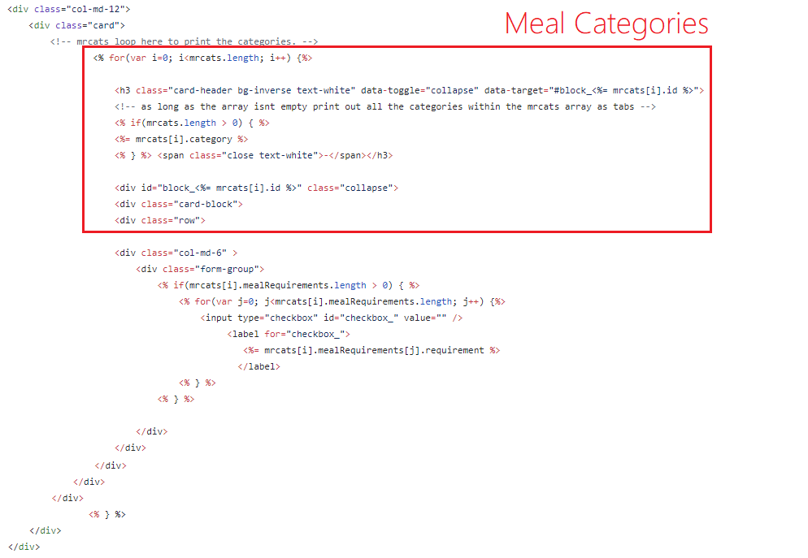
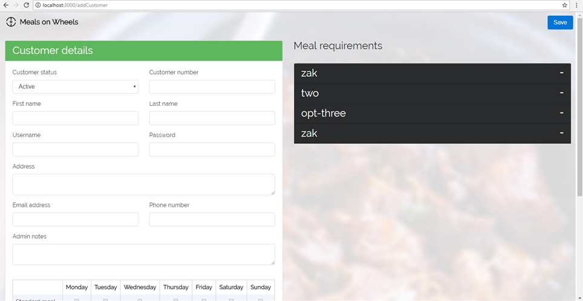
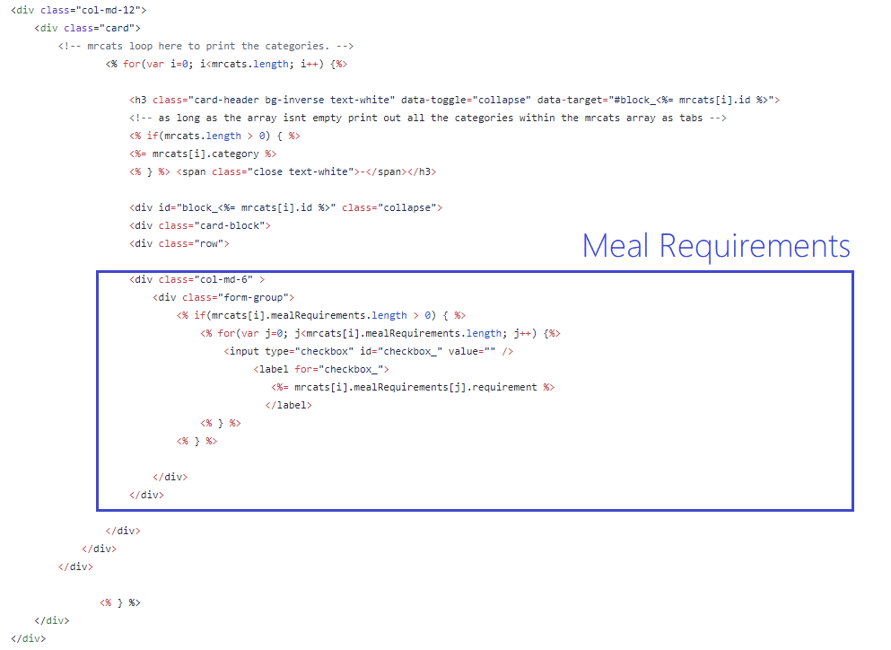
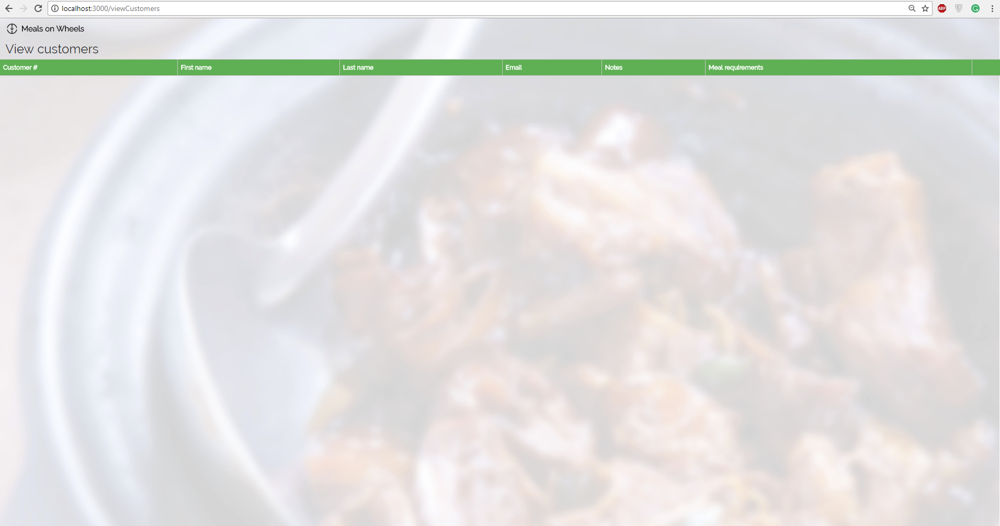
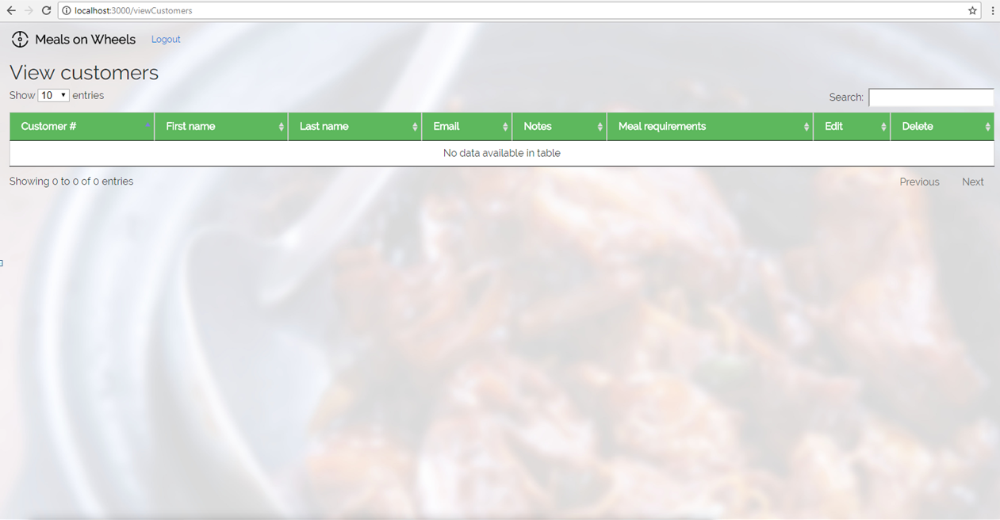
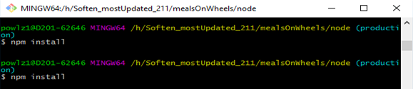

As previously mentioned my group was working on the Meals on Wheels project, I had previous experience with Meals on Wheels so I had to help people understand the NodeJS part of the project as this is what I had worked on first time round. Below I will discuss my involvement within the project, display code snippets, the thought process alongside any fixes I had, and my overall experience with working with this project again. My initial task was to remove any angular from the webpage and use JQuery to more or less replicate what was already there.
This was challenging as I had very little previous experience with Javascript and had never worked with the JQuery library or the Angular framework before. Naturally, my first step was to familiarise myself somewhat with Javascript and the JQuery library. I went to
After being set on the right track the first course of action was to completely strip the file of all the AngularJS, which of course stripped the webpage of some core functionality, meaning now I had to fix it. I have attached some examples below of the Angular that could be seen within the addCustomers.EJS file:
The solution for this involved both Javascript and some EJS, which was mainly used to output data which would ultimately be obtained via JavaScript. The initial task was to pull the Meal requirements out of the Main.EJS via the server. Below is an example of the Code I used to get the retrieved meal requirements displaying within their own DIV, so, one meal requirement per div. The purpose of this function is so that a customer can select what they do or do not want.
And here is an image of the site in action:
These tabs obviously have meaningless names in this image since they are from testing but these values are read in from the database which retrieves specified meal requirements from within MealOptions.EJS. The next task was to then fill the meal requirements with the necessary data, for example one of the meal categories was vegetables, and I needed to be able to select the set meal requirements for vegetables and any other category from MealOptions.EJS and display it within the meal requirements DIV. This code was not too dissimilar to the previous code which made this section a fair bit easier, below is the reworked code for this feature:

I also had the chance to experiment with
Here we can see the difference between the two tables, the first image is the old table that was originally in the site and the second image is the new DataTables table. I think the upgrade was well worth doing and has added a cleaner look to the layout of the page and in general makes it look more professional in my opinion. I can see myself using these tables elsewhere in other assignments and hobby pages because of the simplicity and overall quality that they can bring to a project.
 Issues
Here I will quickly discuss some of the errors and issues I encountered along the way to getting a solution for the tasks I was assigned, and if applicable, how I solved them. One strange issue that I ran into was being unable to install NPM packages via the Package.JSON file within the node directory that contain the necessary dependencies in order to prepare, and launch the server which obviously meant I couldn’t test any of my work. This was a reoccurring issue that happened 3 or 4 times, usually a system restart would resolve the issue but on one occasion it did not. Below is an image of me attempting to run “NPM Install” and getting no response at all (even after leaving it for long periods of time):

I was able to find and use the command: “NPM Install --verbose”,